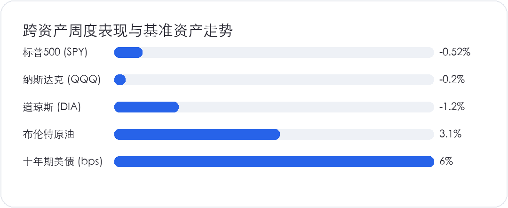
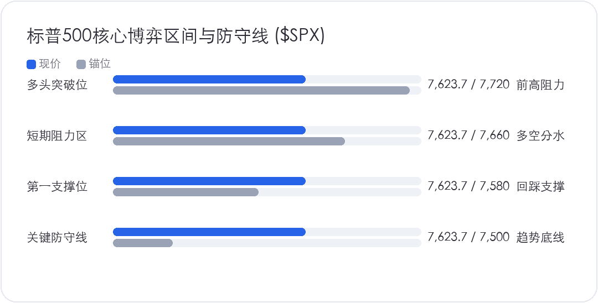

<div style="margin:0;padding:0;background:#f5f7fa;color:#2a2a34;font-size:16px;line-height:1.9;font-family:-apple-system,BlinkMacSystemFont,'SF Pro Text','PingFang SC','Hiragino Sans GB','Microsoft YaHei',Arial,sans-serif;font-variant-numeric:tabular-nums;font-feature-settings:'tnum' 1,'lnum' 1;text-align:left !important;text-align-last:left;letter-spacing:0;word-spacing:normal;white-space:normal;word-break:normal;box-sizing:border-box;"><div style="margin:0;background:#ffffff;padding:28px 22px 44px 22px;box-sizing:border-box;text-align:left !important;text-align-last:left;letter-spacing:0;word-spacing:normal;white-space:normal;word-break:normal;"><p style="display:block;width:100%;margin:0 0 12px 0;padding:0;color:#2763e9;font-size:10px;line-height:1.6;font-weight:650;letter-spacing:0.12em;text-align:center !important;text-align-last:center;word-spacing:normal;white-space:normal;word-break:normal;box-sizing:border-box;">美股 · 期权 · 资讯 · 观点</p><div style="margin:0 0 30px 0;padding:0;text-align:center !important;text-align-last:center;word-spacing:normal;white-space:normal;word-break:normal;box-sizing:border-box;"></div><div style="margin:0 0 0 0;padding:28px 0 0 0;text-align:left !important;text-align-last:left;letter-spacing:0;word-spacing:normal;white-space:normal;word-break:normal;box-sizing:border-box;"><div style="margin:0 0 12px 0;padding:0;text-align:left !important;line-height:1.2;border:0;display:flex;align-items:center;gap:10px;text-align-last:left;letter-spacing:0;word-spacing:normal;white-space:normal;word-break:normal;box-sizing:border-box;"><span style="display:inline-block;flex:0 0 auto;vertical-align:middle;color:#2763e9;font-size:12px;font-weight:850;letter-spacing:0.12em;line-height:1.2;text-transform:uppercase;border:0;box-sizing:border-box;">0 · MACRO</span><span style="display:block;flex:1 1 auto;min-width:36px;vertical-align:middle;height:1px;margin:0 0 2px 0;background:#2763e9;line-height:1px;font-size:0;border:0;box-sizing:border-box;"></span></div><p style="margin:0 0 16px 0;padding:0;color:#2a2a34;font-size:22px;line-height:1.45;font-weight:850;text-align:left !important;letter-spacing:0;text-align-last:left;word-spacing:normal;white-space:normal;word-break:normal;box-sizing:border-box;">标普连涨势头在5%美债利率前止步，大盘结束高位冲高</p><p style="margin:0 0 16px 0;padding:0;color:#454550;font-size:16px;line-height:1.9;font-weight:400;text-align:left !important;letter-spacing:0;word-spacing:normal;white-space:normal;word-break:normal;text-align-last:left;box-sizing:border-box;">据彭博社 10 月 23 日收盘数据显示，过去一周美股高位的单边上攻势头正式止步，标普 500 指数全周收跌 0.52% 至 7,623.68 点，终结了此前连续刷新纪录的单边行情。科技权重居多的纳斯达克综合指数展现出一定抗跌韧性，全周微跌 0.20% 报收 25,955.34 点；对宏观通胀与利率成本最为敏感的传统周期蓝筹则首当其冲，道琼斯工业平均指数单日重挫 652 点，全周大跌 1.20% 收在 52,215.16 点。</p><p style="margin:0 0 16px 0;padding:0;color:#454550;font-size:16px;line-height:1.9;font-weight:400;text-align:left !important;letter-spacing:0;word-spacing:normal;white-space:normal;word-break:normal;text-align-last:left;box-sizing:border-box;">从底层无风险资产来看，全球资产定价之锚十年期美债收益率在 10 月 23 日尾盘强势上冲，一举触及 5.00% 整数关键关口。客观对账前期的推演框架，原本市场普遍预期企业盈利韧性能继续稀释高估值风险，但随着基准利率重新站上 5.00% 警戒线，美股高位追涨的资金意愿已经大幅收敛。对比 2024 年同期的宽松预期，当前全球资本市场面临的是一个彻底告别廉价资金红利的现实宏观环境。</p></div><div style="margin:30px 0 0 0;padding:28px 0 0 0;text-align:left !important;text-align-last:left;letter-spacing:0;word-spacing:normal;white-space:normal;word-break:normal;box-sizing:border-box;"><div style="margin:0 0 12px 0;padding:0;text-align:left !important;line-height:1.2;border:0;display:flex;align-items:center;gap:10px;text-align-last:left;letter-spacing:0;word-spacing:normal;white-space:normal;word-break:normal;box-sizing:border-box;"><span style="display:inline-block;flex:0 0 auto;vertical-align:middle;color:#2763e9;font-size:12px;font-weight:850;letter-spacing:0.12em;line-height:1.2;text-transform:uppercase;border:0;box-sizing:border-box;">1 · MACRO</span><span style="display:block;flex:1 1 auto;min-width:36px;vertical-align:middle;height:1px;margin:0 0 2px 0;background:#2763e9;line-height:1px;font-size:0;border:0;box-sizing:border-box;"></span></div><p style="margin:0 0 16px 0;padding:0;color:#2a2a34;font-size:22px;line-height:1.45;font-weight:850;text-align:left !important;letter-spacing:0;text-align-last:left;word-spacing:normal;white-space:normal;word-break:normal;box-sizing:border-box;">原油暴涨激活二次通胀警报，5%无风险利率重构美股估值底线</p><p style="margin:0 0 16px 0;padding:0;color:#454550;font-size:16px;line-height:1.9;font-weight:400;text-align:left !important;letter-spacing:0;word-spacing:normal;white-space:normal;word-break:normal;text-align-last:left;box-sizing:border-box;">造成长端美债收益率反常飙升与美股估值承压的核心机制，在于能源端输入型通胀与紧缩预期的剧烈共振。美国能源信息署于 10 月 23 日公布的数据显示，受中东地缘局势急剧升温影响，国际基准布伦特原油期货单日飙升超过 3%，突破每桶 116 美元关口，创下近四年以来的最高水平。高昂的原油价格不仅迅速推高了运输与工业全要素成本，更全面激活了市场对二次通胀卷土重来的避险押注。</p><p style="margin:4px 0 16px 0;padding:0;text-align:center !important;text-align-last:center;word-spacing:normal;white-space:normal;word-break:normal;box-sizing:border-box;"></p><p style="margin:0 0 16px 0;padding:0;color:#454550;font-size:16px;line-height:1.9;font-weight:400;text-align:left !important;letter-spacing:0;word-spacing:normal;white-space:normal;word-break:normal;text-align-last:left;box-sizing:border-box;">更深层次的资产负债表约束在于基准利率中枢的重估。美联储在 9 月议息会议加息 25 个基点后，目前将联邦基金目标利率区间维持在 3.75% 至 4.0%。根据芝加哥商品交易所（CME）利率期货最新定价，虽然市场预期 10 月底会议按兵不动的概率达到 80%，但在 116 美元油价重压下，12 月再度加息 25 个基点的概率已迅速攀升至 60% 以上。当十年期美债收益率达到 5.00% 时，美股股票风险溢价（ERP）被压缩至极限低位，标普 500 指数目前处于历史高位区间的远期估值倍数面临极其沉重的引力压制，大盘估值的容错空间已变得极度狭窄。</p></div><div style="margin:30px 0 0 0;padding:28px 0 0 0;text-align:left !important;text-align-last:left;letter-spacing:0;word-spacing:normal;white-space:normal;word-break:normal;box-sizing:border-box;"><div style="margin:0 0 12px 0;padding:0;text-align:left !important;line-height:1.2;border:0;display:flex;align-items:center;gap:10px;text-align-last:left;letter-spacing:0;word-spacing:normal;white-space:normal;word-break:normal;box-sizing:border-box;"><span style="display:inline-block;flex:0 0 auto;vertical-align:middle;color:#2763e9;font-size:12px;font-weight:850;letter-spacing:0.12em;line-height:1.2;text-transform:uppercase;border:0;box-sizing:border-box;">2 · EARNINGS</span><span style="display:block;flex:1 1 auto;min-width:36px;vertical-align:middle;height:1px;margin:0 0 2px 0;background:#2763e9;line-height:1px;font-size:0;border:0;box-sizing:border-box;"></span></div><p style="margin:0 0 16px 0;padding:0;color:#2a2a34;font-size:22px;line-height:1.45;font-weight:850;text-align:left !important;letter-spacing:0;text-align-last:left;word-spacing:normal;white-space:normal;word-break:normal;box-sizing:border-box;">科技五巨头超级财报周与美联储十月议息决议撞车</p><p style="margin:0 0 16px 0;padding:0;color:#454550;font-size:16px;line-height:1.9;font-weight:400;text-align:left !important;letter-spacing:0;word-spacing:normal;white-space:normal;word-break:normal;text-align-last:left;box-sizing:border-box;">本周美股将迎来下半年最具决定性的宏观超级周，重磅利率决议与科技核心财报将正面相撞。在货币政策维度，美联储将于 10 月 27 日至 28 日（周二至周三）举行 FOMC 议息会议，周三下午正式公布利率决议并举行鲍威尔新闻发布会，市场核心审视其对 116 美元原油输入型通胀的定性，以及是否会在前瞻指引中强化 12 月加息偏向。</p><p style="margin:4px 0 16px 0;padding:0;text-align:center !important;text-align-last:center;word-spacing:normal;white-space:normal;word-break:normal;box-sizing:border-box;"></p><p style="margin:0 0 16px 0;padding:0;color:#454550;font-size:16px;line-height:1.9;font-weight:400;text-align:left !important;letter-spacing:0;word-spacing:normal;white-space:normal;word-break:normal;text-align-last:left;box-sizing:border-box;">在企业盈利维度，标普市值权重居前的超级科技五巨头将密集发布三季度业绩。周二盘后谷歌母公司 Alphabet (<code><strong style="color:#2a2a34;font-weight:700;box-sizing:border-box;">GOOGL</strong></code>) 打头阵；周三盘后微软 (<code><strong style="color:#2a2a34;font-weight:700;box-sizing:border-box;">MSFT</strong></code>) 与 Meta (<code><strong style="color:#2a2a34;font-weight:700;box-sizing:border-box;">META</strong></code>) 联袂登场，市场焦点在于其数以百亿美元计的 AI 资本开支能否兑现为确定性的企业端收入；周四盘后苹果 (<code><strong style="color:#2a2a34;font-weight:700;box-sizing:border-box;">AAPL</strong></code>) 与亚马逊 (<code><strong style="color:#2a2a34;font-weight:700;box-sizing:border-box;">AMZN</strong></code>) 接棒。与此同时，周三公布三季度实际 GDP 初值预估，周四公布 9 月核心 PCE 物价指数，周五则迎来 10 月非农就业报告。在超级催化剂如此密集的窗口期，任何数据脱靶都将迅速被 5.00% 高息放大为盘面剧烈波动。</p></div><div style="margin:30px 0 0 0;padding:28px 0 0 0;text-align:left !important;text-align-last:left;letter-spacing:0;word-spacing:normal;white-space:normal;word-break:normal;box-sizing:border-box;"><div style="margin:0 0 12px 0;padding:0;text-align:left !important;line-height:1.2;border:0;display:flex;align-items:center;gap:10px;text-align-last:left;letter-spacing:0;word-spacing:normal;white-space:normal;word-break:normal;box-sizing:border-box;"><span style="display:inline-block;flex:0 0 auto;vertical-align:middle;color:#2763e9;font-size:12px;font-weight:850;letter-spacing:0.12em;line-height:1.2;text-transform:uppercase;border:0;box-sizing:border-box;">3 · MACRO</span><span style="display:block;flex:1 1 auto;min-width:36px;vertical-align:middle;height:1px;margin:0 0 2px 0;background:#2763e9;line-height:1px;font-size:0;border:0;box-sizing:border-box;"></span></div><p style="margin:0 0 16px 0;padding:0;color:#2a2a34;font-size:22px;line-height:1.45;font-weight:850;text-align:left !important;letter-spacing:0;text-align-last:left;word-spacing:normal;white-space:normal;word-break:normal;box-sizing:border-box;">面对5%利率高墙与超级财报考验，7580点成为多空关键分水岭</p><p style="margin:0 0 16px 0;padding:0;color:#454550;font-size:16px;line-height:1.9;font-weight:400;text-align:left !important;letter-spacing:0;word-spacing:normal;white-space:normal;word-break:normal;text-align-last:left;box-sizing:border-box;">在十年期美债收益率牢牢压在 5.00% 上方的宏观逆风下，本周美股的真正胜负手，已不再是科技巨头能否交出一份微幅超预期的财报，而是资本市场对高昂 AI 资本开支的容忍极限在哪里。当无风险资产能够提供锁定 5% 的扎实回报时，投资人对科技巨头自由现金流被机房与芯片吞噬的敏感度将呈指数级上升。如果微软、Alphabet 与 Meta 的管理层在指引中继续拔高明年资本支出，却拿不出相匹配的收入加速证据，高估值龙头的杀估值回撤就会加速向整个大盘外溢。</p><p style="margin:0 0 16px 0;padding:0;color:#454550;font-size:16px;line-height:1.9;font-weight:400;text-align:left !important;letter-spacing:0;word-spacing:normal;white-space:normal;word-break:normal;text-align-last:left;box-sizing:border-box;">映射到盘面博弈上，标普 500 指数在 7,580 点构筑了近期的第一道多空平衡线。只要大盘能够在震荡中守住 7,580 点，市场就仍能维持以超级蓝筹消化利率重压的箱体拉锯格局；一旦这一支撑被财报不及预期或原油继续上攻有效击穿，趋势止损盘将被集中触发，指数将不可避免地加速回探 7,500 点整数关口的防御底线。在超级周诸多重磅催化剂密集落地前，理性的交易纪律是拒绝盲目追高，维持中性仓位防守，静待波动率集中释放后再顺势跟进。</p></div><div style="margin:34px 0 0 0;padding:0;border:1px solid #e4e7ed;border-radius:24px;background:#fafbfc;text-align:center !important;box-sizing:border-box;overflow:hidden;text-align-last:center;word-spacing:normal;white-space:normal;word-break:normal;"><p style="margin:0;padding:18px 16px;color:#6a6a78;font-size:14px;line-height:1.8;text-align:center !important;background:#fafbfc;box-sizing:border-box;text-align-last:center;word-spacing:normal;white-space:normal;word-break:normal;">长按识别二维码关注公众号，持续获取每日美股资讯与观点。</p><p style="margin:0;text-align:center !important;background:#ffffff;box-sizing:border-box;text-align-last:center;word-spacing:normal;white-space:normal;word-break:normal;"></p></div><p style="margin:28px 0 0 0;padding:22px 0 0 0;color:#9a9aa8;font-size:12px;line-height:1.8;text-align:center !important;text-align-last:center;word-spacing:normal;white-space:normal;word-break:normal;box-sizing:border-box;">免责声明：本文仅为个人市场观察和交易复盘，不构成任何投资建议；市场有风险，交易需谨慎。点击阅读原文可跳转博客。</p></div></div>
